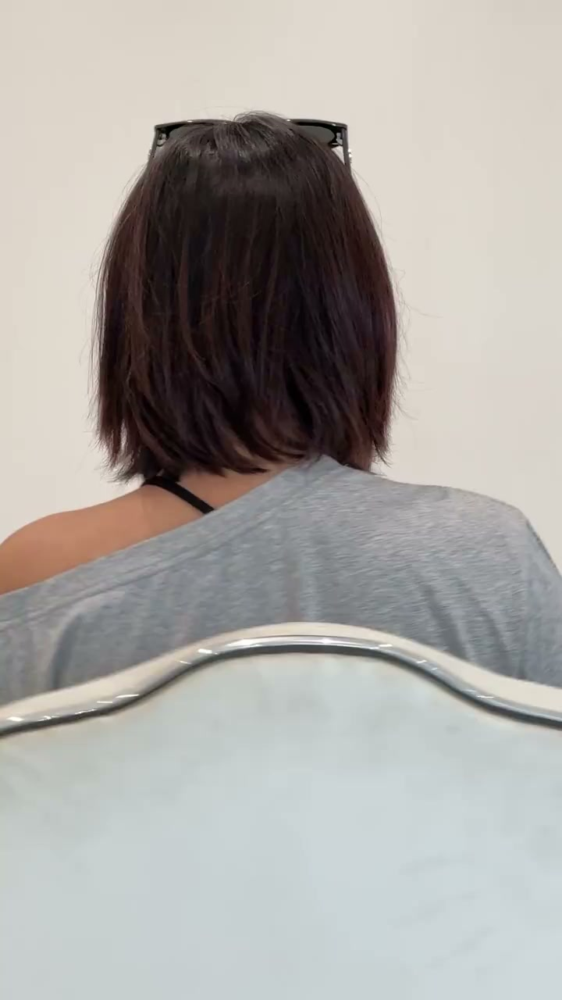
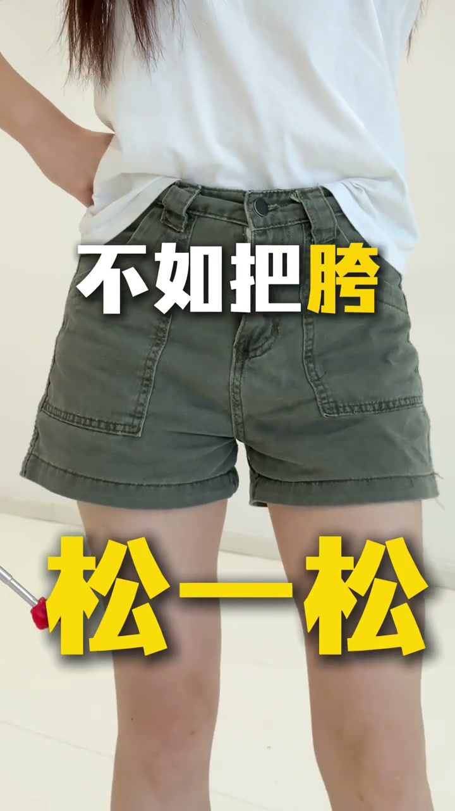
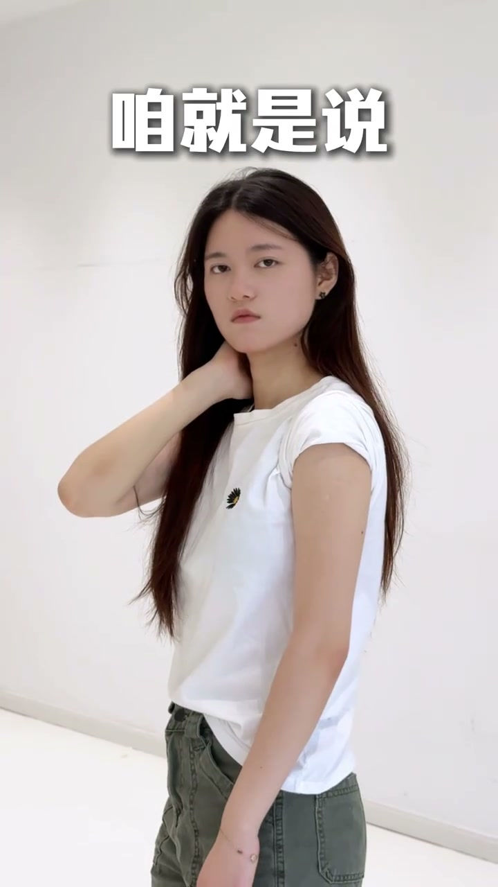
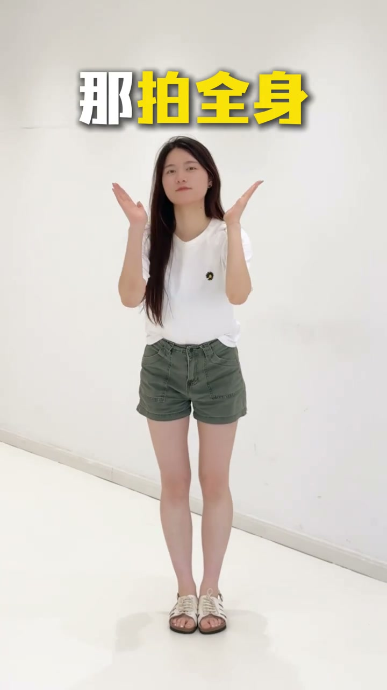
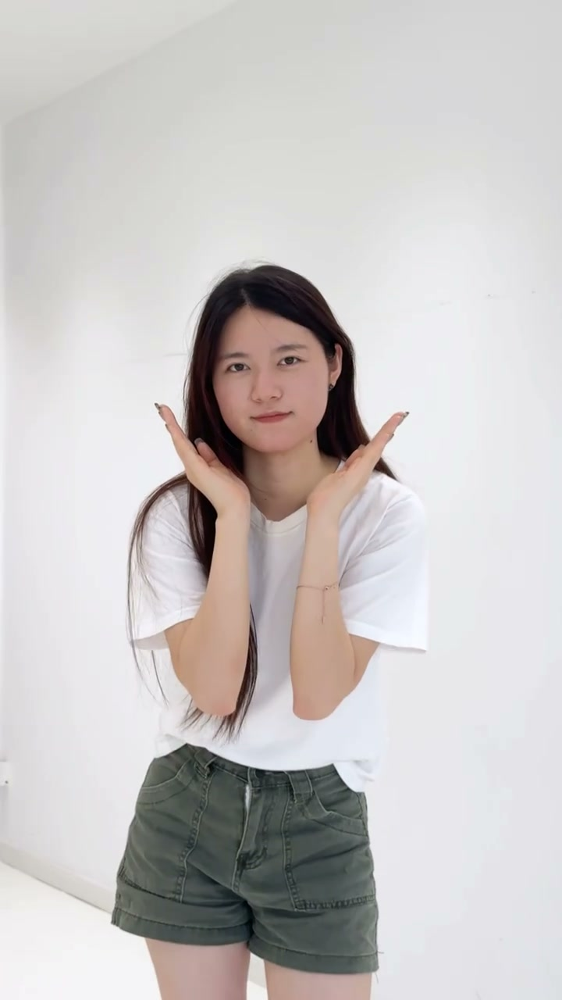
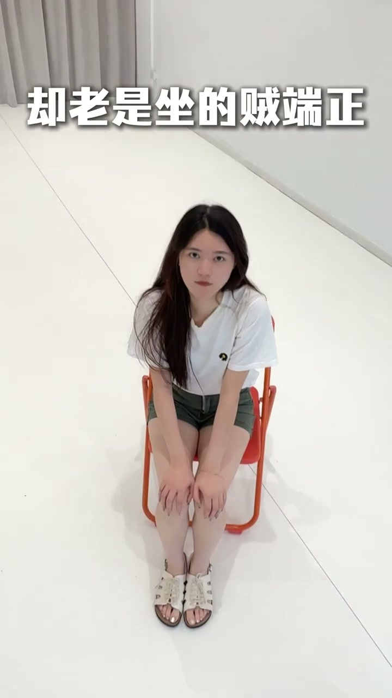

内容要点
[00:00] 你知道你拍照为什么不好看吧
[00:01] 来 看镜头
[00:04] 不管摆什么姿势
[00:06] 你非得正点看镜头
[00:07] 难道你就没有想过试试侧脸
[00:11] 再看镜头吗
[00:13] 有没有感觉生动了一点点
[00:16] 再来 一拍照就像发展
[00:18] 能不讲一码
[00:20] 不如把块松一松
[00:21] 对角的肩膀挑一挑
[00:23] 身体一旦有了层次
[00:25] 包会好看很多
[00:27] 上身胖的
[00:28] 咱就是说这照片非得拍侧面吗
[00:31] 来 胳膊向后方
[00:33] 胸腔转过来
[00:35] 人正一点 不见嫌瘦
[00:37] 动作也会舒缠很多
[00:40] 比例不好
[00:41] 那拍全身就别摆这种姿势了
[00:44] 而是把腿往前伸
[00:46] 身体往后拉
[00:48] 加远小
[00:49] 这样的动作
[00:50] 才能让你拥有上镜好比例
[00:53] 你明明想拍的是生命力
[00:55] 却老是做的贼短照
[00:57] 这怎么行
[00:58] 看好了
[01:00] 再弯腰
[01:01] 然后把腿踢起来
[01:03] 生命力的绝窍就在这
[01:06] 你以为这就完了
[01:08] 还早着呢





